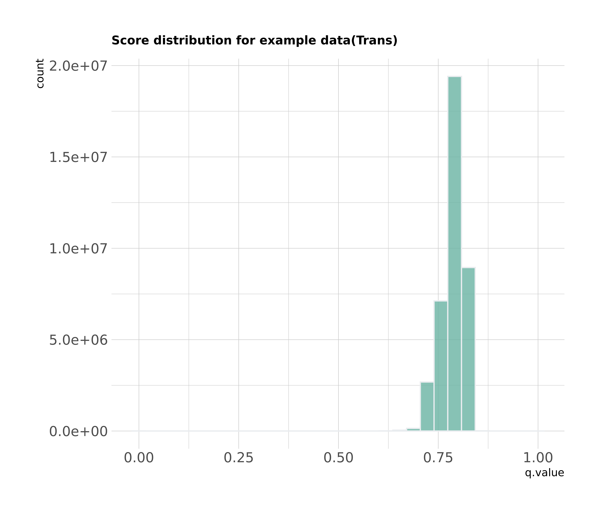
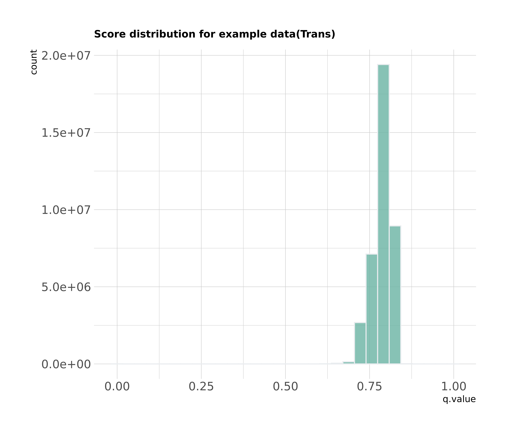
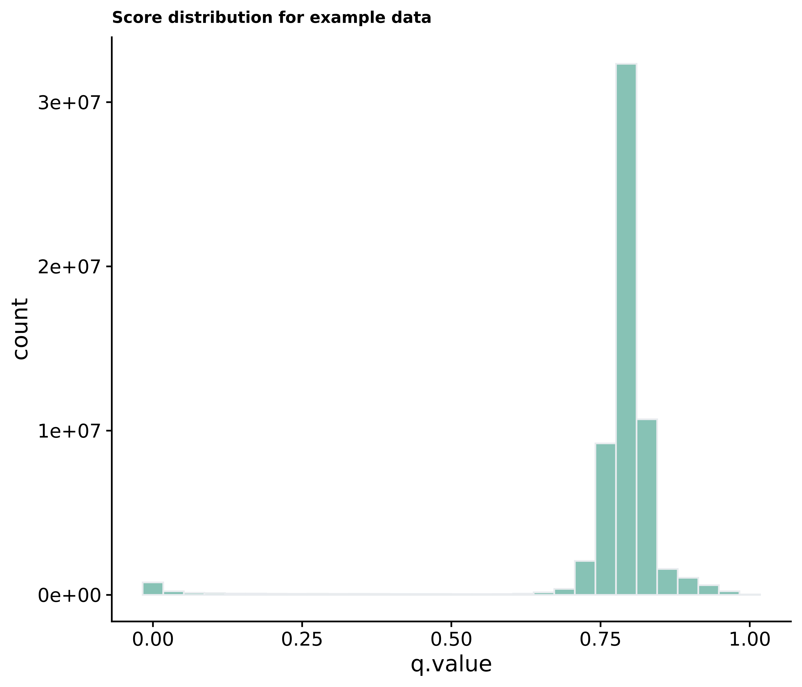
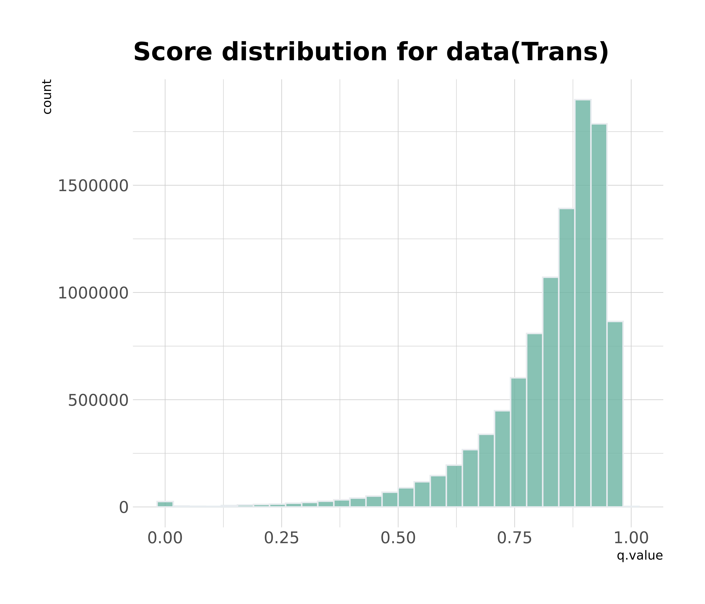
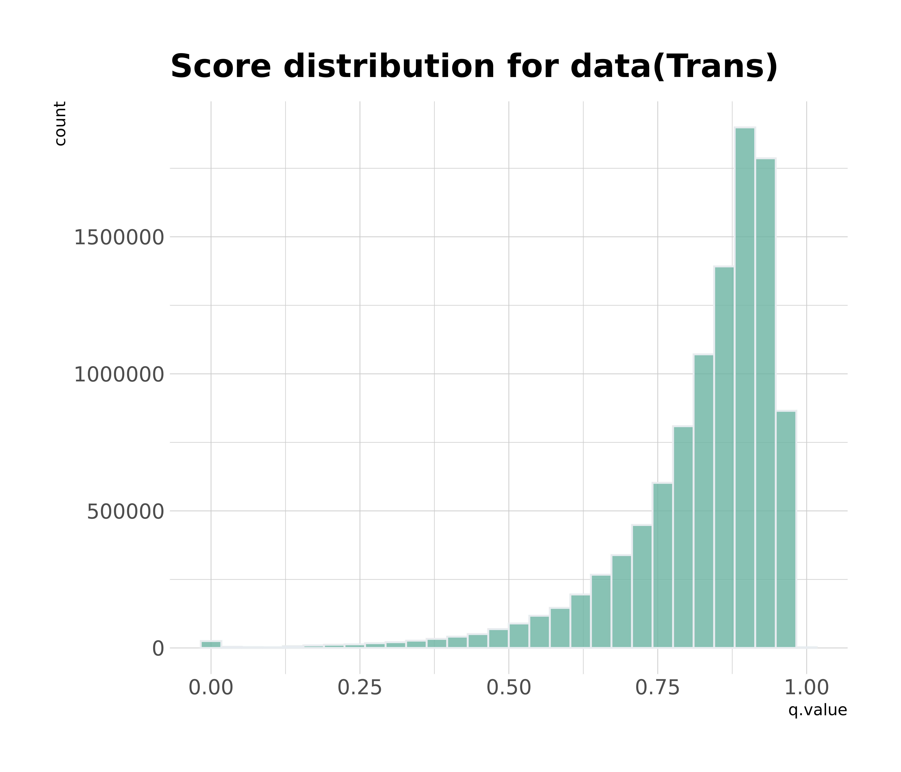
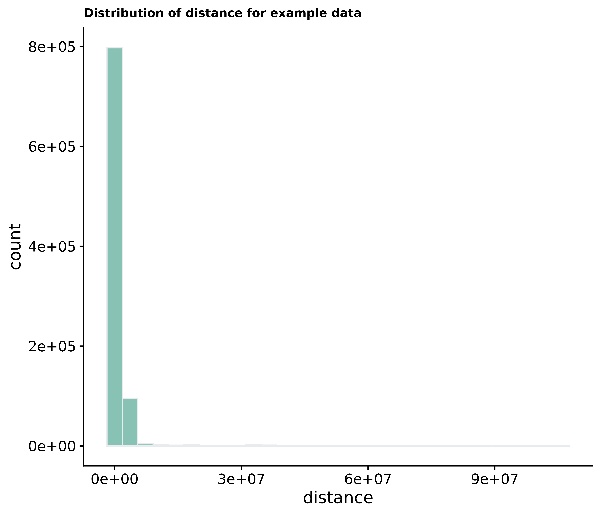
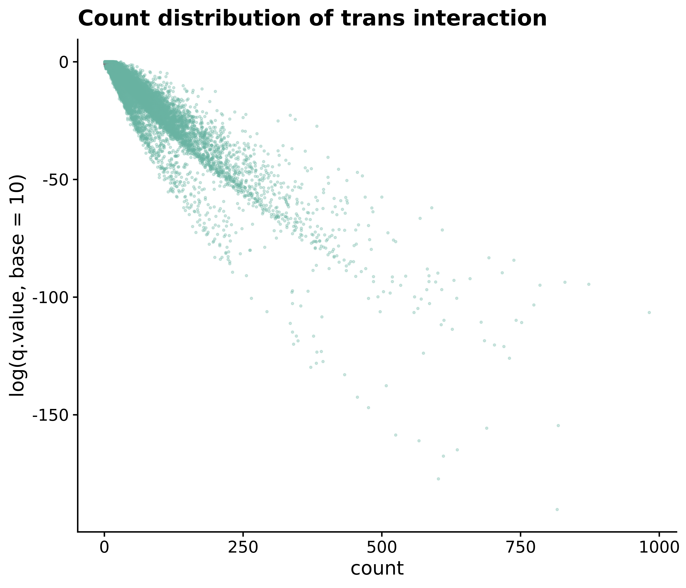

Analysis of Chicane Results
Shashank Tiwari
Updated
2021-06-18
Initial Observations
We look to analyse the ouput from the initial chicane run. Compare the results from the previous chicago run.
Introduction to the Chicane
CHiCANE was designed to identify regions of interest that interact more than expected by chance. To indetify the interaction peaks, CHiCANE models the expected number of reads linking two restriction fragments as a function of the distance between the loci and the ‘interactibility’ of the bait fragment; that is, its inherent propensity to interact with other fragments.
Let \(Y_{ij}\) represent the count of interactions between a bait \(i\) and a fragment \(j\),\(d_{ij}\) be the distance between the bait and the otherEnd and \(t_{i}\) denote the number of reads linking a bait \(i\) with another fragment in trans. \(Y_{ij}\) is such that it is assumed to follow a distribution with a mean \(\mu_{ij}\) as: \[ \mu_{ij} = \beta_0 + \beta_1 \log(d_{ij}) + \beta_2 \log(t_i+1) \]
For bait to bait interactions, terms are added to the model to adjust for trans counts of the other end, fragment j, and the product of trans counts of both fragments as: \[ \mu_{ij} = \beta_0 + \beta_1 \log(d_{ij}) + \beta_2 \log(t_i+1) + \beta_3 \log(t_j + 1) + \beta_4 \log(t_i +1) \log(t_j+1)\] Each possible interaction is assaigned an expected \(\mu_{ij}\) and a p-value for the observed counts \(y_{ij}\) versus what is expected by chance is calculated as: \[p = P(Y_{ij} \geq y_{ij})\]
Score distribution for our data.
Let us first look at the scores for our data. The threshold value used in the chicane paper is q-value<0.005
Cis vs trans interactions
Since majority of interactions detected are trans interactions we would like compare how is the distribution of q.value in both the cases.
 

Distribution of q.value
Score distribution of example data
This is the output for the example data. 
## used (Mb) gc trigger (Mb) max used (Mb)
## Ncells 9654410 515.7 15962222 852.5 11634531 621.4
## Vcells 1069464766 8159.4 2083153952 15893.3 2083153952 15893.3

Distribution of q.value
Significant Interactions
We can sort the significant interactions using a threshold of 0.05
Distribution of q.value with distance
Here is a table of the highest q-values observed
## target.id bait.id target.chr target.start
## 1: chr11:65497688-65506516 chr10:75431624-76560168 chr11 65497688
## 2: chr11:65497688-65506516 chr10:65912523-67696195 chr11 65497688
## 3: chr11:65497688-65506516 chr10:76869601-77638369 chr11 65497688
## 4: chr11:65497688-65506516 chr1:56994778-58546734 chr11 65497688
## 5: chr11:65497688-65506516 chr1:6785454-7769706 chr11 65497688
## 6: chr11:65497688-65506516 chr10:53802771-55627942 chr11 65497688
## 7: chr11:65497688-65506516 chr1:87620803-88685204 chr11 65497688
## 8: chr11:65497688-65506516 chr10:50990888-52298423 chr11 65497688
## 9: chr6:63719980-65707226 chr6:63635802-63779336 chr6 63719980
## 10: chr11:65497688-65506516 chr1:48532854-50023954 chr11 65497688
## target.end bait.chr bait.start bait.end bait.to.bait bait.trans.count
## 1: 65506516 chr10 75431624 76560168 TRUE 15428
## 2: 65506516 chr10 65912523 67696195 TRUE 8445
## 3: 65506516 chr10 76869601 77638369 TRUE 9987
## 4: 65506516 chr1 56994778 58546734 TRUE 11447
## 5: 65506516 chr1 6785454 7769706 TRUE 9019
## 6: 65506516 chr10 53802771 55627942 TRUE 7661
## 7: 65506516 chr1 87620803 88685204 TRUE 15801
## 8: 65506516 chr10 50990888 52298423 TRUE 24078
## 9: 65707226 chr6 63635802 63779336 TRUE 4774
## 10: 65506516 chr1 48532854 50023954 TRUE 7066
## target.trans.count distance count expected p.value q.value
## 1: 1017967 NA 816 15.098128 8.647309e-195 5.660528e-191
## 2: 1017967 NA 602 10.872046 1.471637e-181 5.904207e-178
## 3: 1017967 NA 611 11.912425 5.955975e-172 2.740344e-168
## 4: 1017967 NA 636 12.831882 2.084479e-169 1.314056e-165
## 5: 1017967 NA 567 11.268684 1.684781e-165 9.003467e-162
## 6: 1017967 NA 525 10.309893 6.794550e-163 2.537765e-159
## 7: 1017967 NA 689 15.295962 2.541817e-160 2.060651e-156
## 8: 1017967 NA 818 19.242720 2.793842e-159 2.641298e-155
## 9: 12409 1006034 3938 31.612910 2.607435e-151 2.245001e-148
## 10: 1017967 NA 476 9.865561 2.618277e-151 1.075850e-147
## bait_name
## 1: LRMDA
## 2: CTNNA3
## 3: KCNMA1
## 4: DAB1
## 5: CAMTA1
## 6: PCDH15
## 7: PKN2-AS1
## 8: PRKG1
## 9: PHF3
## 10: AGBL4#Distance Counts
Another comparison could be done with how are the distances of interaction distributed for our data vs the example data.
## used (Mb) gc trigger (Mb) max used (Mb)
## Ncells 9694434 517.8 15962222 852.5 11767232 628.5
## Vcells 1070584630 8168.0 2501371972 19084.0 2500720096 19079.0
Distribution of distance counts
Similarly we can compare this for significant interactions. Note that the majority of the interactions however are trans interactions so such a comparison has its limitations.
Distribution of distance counts
Distribution of number of counts wrt to distance and score
We look at the distribution of read count and scores with the distance of the interaction
Distribution of N-reads
 

Distribution of N-reads
Correlation plot
We can plot the correlation between the count of each interaction with the \(p\)-value. 
Splitting this plot for cis and trans interactions
Cis vs Trans
Comparing this with the correlation plot for the example data

Cis vs Trans
Trans vs cis interactions
It should be noted that majority of the interactions in our data are trans interactions(88.4178604), therefore the distance relation of the score can not be visualized easily here.

Comparison with previous plots
Previously we had seen certain plots which stood out when looking at the relationship between the probability of detecting an interaction and the distance. We compare these plots with the current q.value distribution.
## used (Mb) gc trigger (Mb) max used (Mb)
## Ncells 8948467 477.9 15962222 852.5 12639700 675.1
## Vcells 403258302 3076.7 2934311487 22387.1 3667889358 27983.8
MALAT1

RNVU1-7

RMRP

EBF1

TENM4
NEAT1
EHBP1
PDE3B
DAB1